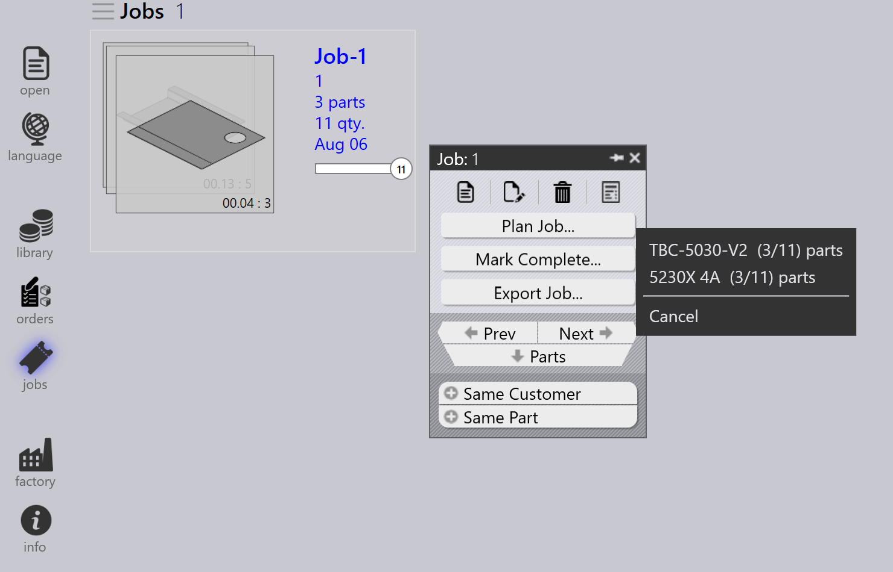

Workflow
TruSmartCAM คือ Manufacturing Execution System ที่จัดการและปรับกระบวนการผลิต งานโลหะแผ่นให้เหมาะสมที่สุด workflow ใน TruSmartCAM ประกอบด้วยลำดับขั้นตอน ที่คุณปฏิบัติตามเพื่อทำงานหรือกระบวนการเฉพาะให้เสร็จสมบูรณ์ คุณสามารถปรับแต่ง workflow ให้เหมาะกับกระบวนการผลิตต่าง ๆ และปรับให้เข้ากับความต้องการเฉพาะของคุณ ได้ โดยทั่วไป workflow ใน TruSmartCAM ประกอบด้วยขั้นตอน ดังต่อไปนี้:
1. กำหนดค่าระบบ
กำหนดค่า TruSmartCAM ให้ตรงกับสภาพแวดล้อมการผลิตของคุณ ขั้นตอนพื้นฐานนี้ รวมถึงการกำหนดเครื่องจักรพร้อมความสามารถและพารามิเตอร์ การเพิ่ม วัสดุที่มีอยู่และช่วงความหนา การกำหนดค่าไลบรารี tooling ด้วย พันช์และดาย การสร้างชีตการตั้งค่าสำหรับการกำหนดค่าเครื่องจักรต่าง ๆ และการจัดการบัญชีผู้ใช้ด้วยสิทธิ์ที่เหมาะสม ระบบที่กำหนดค่าอย่างถูกต้อง จะช่วยให้การประมวลผลแม่นยำและป้องกันข้อผิดพลาดในขั้นตอนหลัง ๆ การ ตั้งค่านี้มักดำเนินการเพียงครั้งเดียวในระหว่างการปรับใช้เริ่มต้น และอัปเดต เป็นระยะเมื่อโรงงานของคุณพัฒนาขึ้น
สำหรับข้อมูลเพิ่มเติม ดูที่ Add/Remove machine, Material, Sheets, Setup tooling และ Configure users

2. เพิ่มชิ้นงานเข้าสู่ไลบรารี
นำเข้าชิ้นงาน CAD แบบ 2D หรือ 3D เข้าสู่ไลบรารีชิ้นงานโดยใช้รูปแบบที่รองรับ เช่น ไฟล์ DXF, DWG หรือ STEP ในระหว่างการนำเข้า TruSmartCAM จะวิเคราะห์ เรขาคณิตของชิ้นงานโดยอัตโนมัติ ตรวจสอบความสามารถในการผลิต กำหนด เทคโนโลยีงานโลหะแผ่นที่จำเป็น (เลเซอร์ พันช์ หรือแบบผสม) และสร้างภาพตัวอย่างขนาดย่อ ชิ้นงานที่นำเข้าจะปรากฏเป็นไทล์ในมุมมองไลบรารี ซึ่งไอคอนที่แบ่งด้วยรหัสสี จะบ่งบอกสถานะชิ้นงาน ประเภทเทคโนโลยี ความต้องการวัสดุ และปัญหาที่ตรวจพบ ระบบภาพนี้ช่วยให้ประเมินความพร้อมของชิ้นงานได้อย่างรวดเร็วในพริบตา
สำหรับข้อมูลเพิ่มเติม ดูที่ Library

3. ตรวจสอบชิ้นงานและ tooling
ตรวจทานชิ้นงานที่นำเข้าแต่ละชิ้นเพื่อหาปัญหาการผลิตที่อาจเกิดขึ้น ตรวจสอบว่า เรขาคณิตของชิ้นงานถูกต้องและสามารถผลิตได้ การกำหนด tooling ถูกต้องและ มีอยู่ การเลือกวัสดุและความหนาตรงกับสินค้าคงคลัง และลำดับ การดัดถูกกำหนดอย่างเหมาะสมสำหรับชิ้นงานที่ขึ้นรูป หากตรวจพบปัญหา ให้เปิด ชิ้นงานใน TecZone เพื่อแก้ไขเรขาคณิต กำหนดใหม่หรือปรับ tooling ให้เหมาะสม ปรับ พารามิเตอร์การประมวลผล หรือแก้ไขข้อกำหนดวัสดุ การแก้ปัญหาใน ขั้นตอนนี้จะช่วยป้องกันความล่าช้าในการผลิตและลดของเสียในระหว่างการผลิต
สำหรับข้อมูลเพิ่มเติม ดูที่ Part state และ Tooling status

4. จัดระเบียบชิ้นงานเข้าเป็น job
จัดกลุ่มชิ้นงานที่ตรวจสอบแล้วเข้าเป็น job ตามความต้องการในการผลิต job หนึ่ง แสดงถึงหน่วยการผลิตเชิงตรรกะที่อาจรวมถึงชิ้นงานจาก ออเดอร์ของลูกค้ารายเดียว ชิ้นงานที่ใช้วัสดุและความหนาร่วมกัน ชิ้นงานที่มี กำหนดส่งมอบใกล้เคียงกัน หรือแบบผสมตามกลยุทธ์การผลิตของคุณ job เป็นตัวรองรับสำหรับการวางแผน อนุญาตให้ประมวลผลชิ้นงานที่เกี่ยวข้องเป็นชุด ช่วยให้ใช้วัสดุอย่างมีประสิทธิภาพผ่าน nesting และทำให้การติดตาม และการรายงานง่ายขึ้น job สามารถสร้างได้ด้วยตนเองโดยการเลือกชิ้นงาน หรือ สร้างโดยอัตโนมัติตามกฎและตัวกรองที่กำหนดไว้ล่วงหน้า
สำหรับข้อมูลเพิ่มเติม ดูที่ Jobs

5. วางแผน job ไปยังเครื่องจักรการผลิต
เมื่อสร้าง job แล้ว ให้กำหนด job นั้นไปยังเครื่องจักรการผลิตที่เหมาะสม พิจารณา ความสามารถของเครื่องจักร รวมถึงเทคโนโลยีที่รองรับ (เลเซอร์ พันช์ turret) ความจุวัสดุและความหนา tooling ที่มีอยู่ และปริมาณงานปัจจุบัน หาก มีเครื่องจักรที่เหมาะสมหลายเครื่อง ให้เลือกตามลำดับความสำคัญของการผลิต ความ พร้อมของเครื่องจักร ข้อกำหนดการตั้งค่า หรือการปรับต้นทุนให้เหมาะสม การกำหนดสามารถ ทำด้วยตนเองเพื่อความยืดหยุ่น หรือทำโดยอัตโนมัติตามกฎที่กำหนดไว้ล่วงหน้าและ อัลกอริทึมการจัดตารางเวลาเครื่องจักร
สำหรับข้อมูลเพิ่มเติม ดูที่ Plan job

6. ปล่อย NC สำหรับ job
ในขั้นตอนนี้ layout การตัดจะถูกสร้างขึ้น คุณยังสามารถแก้ไข layout และเพิ่ม เทคโนโลยีการตัดลงใน layout ได้โดยใช้ TecZone หลังจากนั้น ให้ส่งออกเอาต์พุต NC และถ่ายโอนไปยังตัวควบคุมเครื่องจักรหรือตำแหน่งเครือข่าย ที่กำหนด จากนั้น job จะถูกล็อกเพื่อป้องกันการแก้ไขเพิ่มเติม และ สถานะจะถูกอัปเดตเป็น "Released" สำหรับการติดตามการผลิต
สำหรับข้อมูลเพิ่มเติม ดูที่ Send/Recall NC

7. ทำการผลิตให้เสร็จสมบูรณ์และปิด job
ดำเนินการ job ที่ปล่อยแล้วบนเครื่องจักรที่กำหนด ในระหว่างการผลิต ผู้ควบคุมเครื่องจักรจะปฏิบัติตามโปรแกรม NC ตรวจสอบคุณภาพชิ้นงานในระหว่างการตัด จัดการการโหลดและการนำวัสดุออก และแก้ไขสัญญาณเตือนหรือปัญหาของเครื่องจักร เมื่อการผลิตเสร็จสิ้น ให้ทำเครื่องหมายชิ้นงานแต่ละชิ้นหรือทั้ง job ว่าเสร็จสมบูรณ์ใน TruSmartCAM ขั้นตอนสุดท้ายนี้จะอัปเดตบันทึกสินค้าคงคลัง บันทึก เวลาการผลิตจริงและการใช้วัสดุ จัดเก็บข้อมูล job สำหรับการรายงานและ การวิเคราะห์ และทำให้วงจร workflow เสร็จสมบูรณ์
สำหรับข้อมูลเพิ่มเติม ดูที่ Mark complete